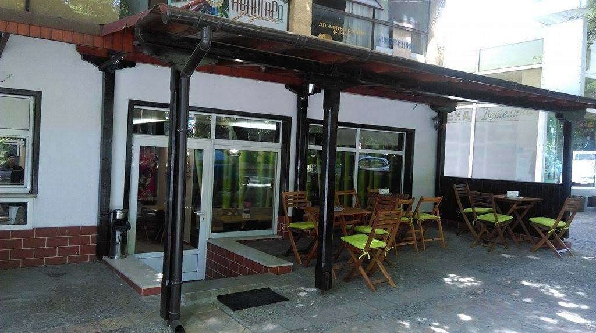

About Us
Kaizen Restaurant is something new and unique on the market for Stara Zagora - a cozy restaurant in the heart of the city. Our goal is to show a traditional Japanese sushi in a refined and modern setting. We keep on high quality not only for products but also for service. We do everything with lots of class and attention to detail. Taste is everything, and we know how to make everyone fall in love with our food.
